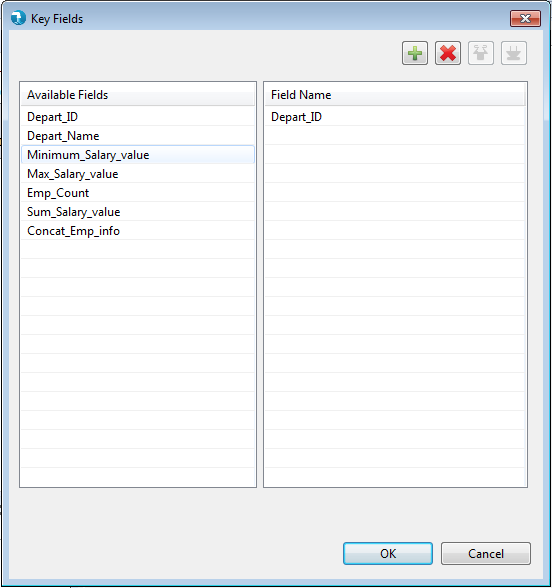
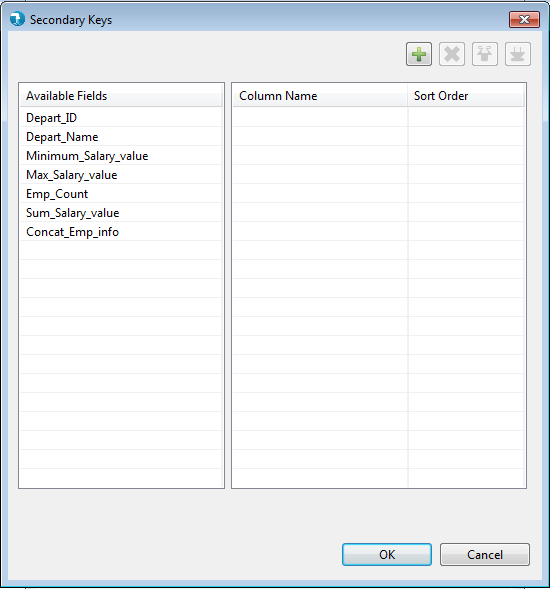
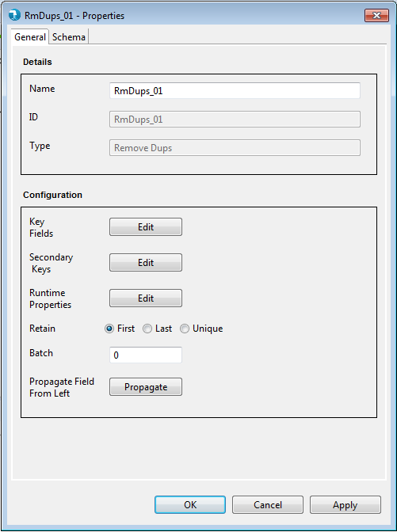
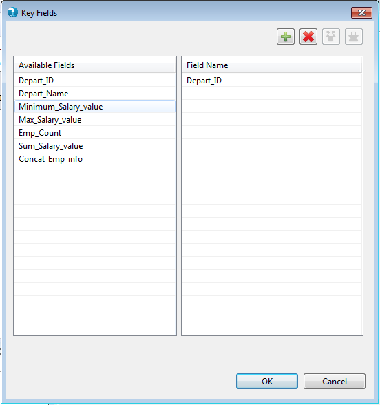
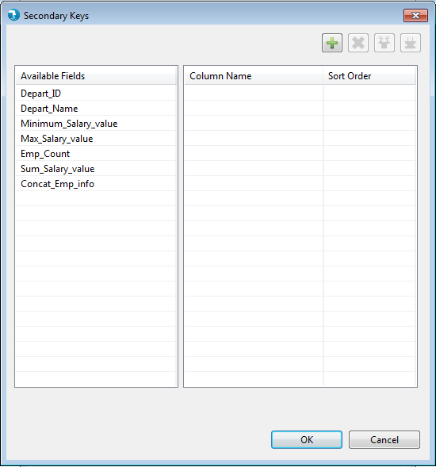
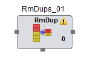
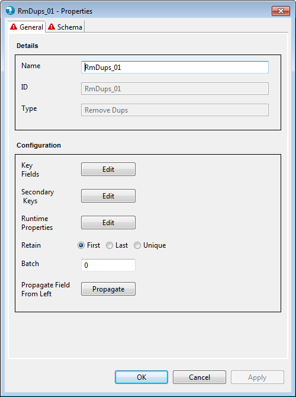
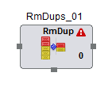

Check How to pass Hadoop properties to component

Remove Dups Properties
Properties for the Remove Dups component can be viewed by Double click->component on canvas. The properties contain only the 'General' tab since Remove Dups falls under the Straight Pull category in the component palette.

Display
Configuration


Check How to pass Hadoop properties to component
The Remove_Dups components applies validations to the mandatory fields as described above. Upon placing the Remove_Dups component on job canvas for the first time (from component palette), the component shows up a warning icon as mandatory properties are not provided.

The properties window displays error icon on mandatory fields if it has an incorrect value. The error icon is displayed on the tab as well, if any of the field within the tab has some error.
If the properties window has some error even after user visit's it once, then the error icon appears on RemoveDups component. This error icon is removed only when all the mandatory fields are supplied with correct values.
